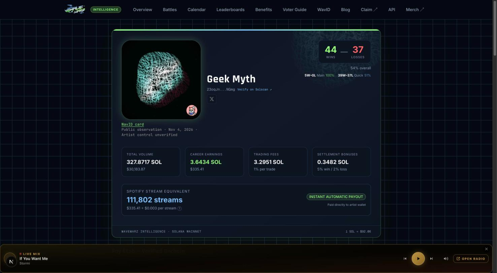
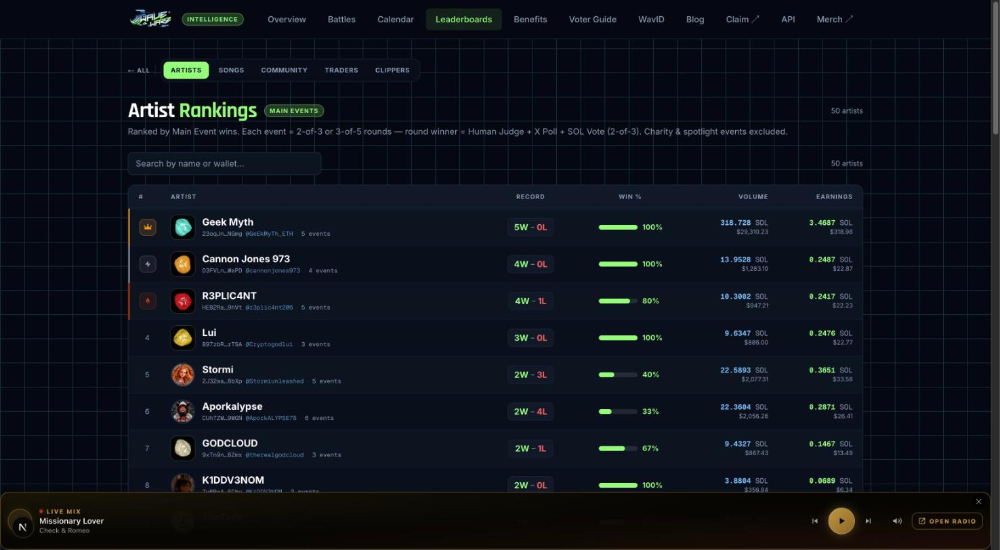
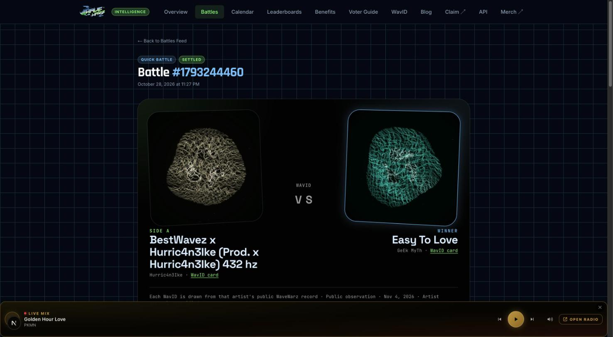

Work in progress
WaveWarz UI redesign
The pages we have built so far, based on AttaBotty's homepage draft. Use the browser back button to return here.
Stats app pages with Wave IDs
The same rebrand applied to the WaveWarz Intelligence app, with each artist's Wave ID drawn from their public WaveWarz record. These pages need the app running, so they are shown as screenshots. Code is on branch wavid-ui-prototype. It is a design prototype and is not ready to merge.



What to know
- Sample data. The queue and the catalog show saved sample data here and say so on the page. The live versions load only when the pages run from the WaveWarz app.
- Nothing here spends money. Wallet, reserve and launch buttons are not connected yet.
- Wave IDs. The textures behind the setup page are the Wave ID loop and stills from Quan. The aqua and lime hex values are still to be confirmed with him.
- Code. Branch candy/homepage-and-battle-setup on wavewarz-intelligence.